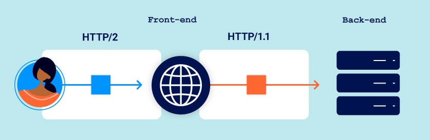

When performing some request smuggling attacks, you will want headers from the victim's request to be appended to your smuggled prefix. However, these can interfere with your attack in some cases, resulting in duplicate header errors and suchlike. In the example above, we've mitigated this by including a trailing parameter and a Content-Length header in the smuggled prefix. By using a Content-Length header that is slightly longer than the body, the victim's request will still be appended to your smuggled prefix but will be truncated before the headers.
Advanced request smuggling
In this section, we'll build on the concepts you've learned so far and teach you some more advanced HTTP request smuggling techniques. We'll also cover a variety of HTTP/2-based attacks that are made possible thanks to Burp's unique HTTP/2-testing capabilities. Don't worry if you're new to HTTP/2 - we'll cover all the essentials as we go.
In particular, we'll look at:
-
How common HTTP/2 implementations enable a range of powerful new vectors for request smuggling, making a number of previously secure sites vulnerable to these kinds of attacks.
-
How you can use request smuggling to persistently poison the response queue, effectively enabling full-site takeover.
-
How you can use HTTP/2-exclusive inputs to construct high-severity exploits even when the target doesn't reuse the connection between the front-end and back-end servers at all.
To help you practice what you've learned, we've provided deliberately vulnerable labs throughout. These are based on real-world vulnerabilities first presented at Black Hat USA 2021 by our Director of Research, James Kettle.
PortSwigger Research
HTTP/2 request smuggling
In this section, we'll show you how, contrary to popular belief, implementing HTTP/2 has actually made many websites more vulnerable to request smuggling, even if they were previously safe from these kinds of attacks.
HTTP/2 message length
Request smuggling is fundamentally about exploiting discrepancies between how different servers interpret the length of a request. HTTP/2 introduces a single, robust mechanism for doing this, which has long been thought to make it inherently immune to request smuggling.
Although you won't see this in Burp, HTTP/2 messages are sent over the wire as a series of separate "frames". Each frame is preceded by an explicit length field, which tells the server exactly how many bytes to read in. Therefore, the length of the request is the sum of its frame lengths.
In theory, this mechanism means there is no opportunity for an attacker to introduce the ambiguity required for request smuggling, as long as the website uses HTTP/2 end to end. In the wild, however, this is often not the case due to the widespread but dangerous practice of HTTP/2 downgrading.
HTTP/2 downgrading
HTTP/2 downgrading is the process of rewriting HTTP/2 requests using HTTP/1 syntax to generate an equivalent HTTP/1 request. Web servers and reverse proxies often do this in order to offer HTTP/2 support to clients while communicating with back-end servers that only speak HTTP/1. This practice is a prerequisite for many of the attacks covered in this section.

Read more
Note on HTTP/2 message representation
As HTTP/2 is a binary protocol, we've used some artistic license to represent HTTP/2 messages in a human-readable format throughout these materials:
-
We display each message as a single entity, rather than separate "frames".
-
We display the headers using plain text name and value fields.
-
We prefix pseudo-header names with a colon to help differentiate them from normal headers.
This closely resembles the way Burp represents HTTP/2 messages in the Inspector, but note that they don't actually look like this on the wire.
H2.CL vulnerabilities
HTTP/2 requests don't have to specify their length explicitly in a header. During downgrading, this means front-end servers often add an HTTP/1 Content-Length header, deriving its value using HTTP/2's built-in length mechanism. Interestingly, HTTP/2 requests can also include their own content-length header. In this case, some front-end servers will simply reuse this value in the resulting HTTP/1 request.
The spec dictates that any content-length header in an HTTP/2 request must match the length calculated using the built-in mechanism, but this isn't always validated properly before downgrading. As a result, it may be possible to smuggle requests by injecting a misleading content-length header. Although the front-end will use the implicit HTTP/2 length to determine where the request ends, the HTTP/1 back-end has to refer to the Content-Length header derived from your injected one, resulting in a desync.
Front-end (HTTP/2)
| :method | POST |
| :path | /example |
| :authority | vulnerable-website.com |
| content-type | application/x-www-form-urlencoded |
| content-length | 0 |
|
GET /admin HTTP/1.1 Host: vulnerable-website.com Content-Length: 10 x=1 |
|
Back-end (HTTP/1)
POST /example HTTP/1.1
Host: vulnerable-website.com
Content-Type: application/x-www-form-urlencoded
Content-Length: 0
GET /admin HTTP/1.1
Host: vulnerable-website.com
Content-Length: 10
x=1GET / HH2.TE vulnerabilities
Chunked transfer encoding is incompatible with HTTP/2 and the spec recommends that any transfer-encoding: chunked header you try to inject should be stripped or the request blocked entirely. If the front-end server fails to do this, and subsequently downgrades the request for an HTTP/1 back-end that does support chunked encoding, this can also enable request smuggling attacks.
Front-end (HTTP/2)
| :method | POST |
| :path | /example |
| :authority | vulnerable-website.com |
| content-type | application/x-www-form-urlencoded |
| transfer-encoding | chunked |
|
0 GET /admin HTTP/1.1 Host: vulnerable-website.com Foo: bar |
|
Back-end (HTTP/1)
POST /example HTTP/1.1
Host: vulnerable-website.com
Content-Type: application/x-www-form-urlencoded
Transfer-Encoding: chunked
0
GET /admin HTTP/1.1
Host: vulnerable-website.com
Foo: barIf a website is vulnerable to either H2.CL or H2.TE request smuggling, you can potentially leverage this behavior to perform the same attacks that we covered in our previous request smuggling labs.
Hidden HTTP/2 support
Browsers and other clients, including Burp, typically only use HTTP/2 to communicate with servers that explicitly advertise support for it via ALPN as part of the TLS handshake.
Some servers support HTTP/2 but fail to declare this properly due to misconfiguration. In such cases, it can appear as though the server only supports HTTP/1.1 because clients default to this as a fallback option. As a result, testers may overlook viable HTTP/2 attack surface and miss protocol-level issues, such as the examples of HTTP/2 downgrade-based request smuggling that we covered above.
To force Burp Repeater to use HTTP/2 so that you can test for this misconfiguration manually:
- From the Settings dialog, go to Tools > Repeater.
- Under Connections, enable the Allow HTTP/2 ALPN override option.
- In Repeater, go to the Inspector panel and expand the Request attributes section.
- Use the switch to set the Protocol to HTTP/2. Burp will now send all requests on this tab using HTTP/2, regardless of whether the server advertises support for this.
Note
If you're using Burp Suite Professional, Burp Scanner automatically detects instances of hidden HTTP/2 support.
Response queue poisoning
Response queue poisoning is a powerful request smuggling attack that enables you to steal arbitrary responses intended for other users, potentially compromising their accounts and even the entire site.
Read more
Request smuggling via CRLF injection
Even if websites take steps to prevent basic H2.CL or H2.TE attacks, such as validating the content-length or stripping any transfer-encoding headers, HTTP/2's binary format enables some novel ways to bypass these kinds of front-end measures.
In HTTP/1, you can sometimes exploit discrepancies between how servers handle standalone newline (\n) characters to smuggle prohibited headers. If the back-end treats this as a delimiter, but the front-end server does not, some front-end servers will fail to detect the second header at all.
Foo: bar\nTransfer-Encoding: chunked
This discrepancy doesn't exist with the handling of a full CRLF (\r\n) sequence because all HTTP/1 servers agree that this terminates the header.
On the other hand, as HTTP/2 messages are binary rather than text-based, the boundaries of each header are based on explicit, predetermined offsets rather than delimiter characters. This means that \r\n no longer has any special significance within a header value and, therefore, can be included inside the value itself without causing the header to be split:
| foo | bar\r\nTransfer-Encoding: chunked |
This may seem relatively harmless on its own, but when this is rewritten as an HTTP/1 request, the \r\n will once again be interpreted as a header delimiter. As a result, an HTTP/1 back-end server would see two distinct headers:
Foo: bar
Transfer-Encoding: chunkedHTTP/2 request splitting
When we looked at response queue poisoning, you learned how to split a single HTTP request into exactly two complete requests on the back-end. In the example we looked at, the split occurred inside the message body, but when HTTP/2 downgrading is in play, you can also cause this split to occur in the headers instead.
This approach is more versatile because you aren't dependent on using request methods that are allowed to contain a body. For example, you can even use a GET request:
| :method | GET |
| :path | / |
| :authority | vulnerable-website.com |
| foo | bar\r\n \r\n GET /admin HTTP/1.1\r\n Host: vulnerable-website.com |
This is also useful in cases where the content-length is validated and the back-end doesn't support chunked encoding.
Accounting for front-end rewriting
To split a request in the headers, you need to understand how the request is rewritten by the front-end server and account for this when adding any HTTP/1 headers manually. Otherwise, one of the requests may be missing mandatory headers.
For example, you need to ensure that both requests received by the back-end contain a Host header. Front-end servers typically strip the :authority pseudo-header and replace it with a new HTTP/1 Host header during downgrading. There are different approaches for doing this, which can influence where you need to position the Host header that you're injecting.
Consider the following request:
| :method | GET |
| :path | / |
| :authority | vulnerable-website.com |
| foo | bar\r\n \r\n GET /admin HTTP/1.1\r\n Host: vulnerable-website.com |
During rewriting, some front-end servers append the new Host header to the end of the current list of headers. As far as an HTTP/2 front-end is concerned, this after the foo header. Note that this is also after the point at which the request will be split on the back-end. This means that the first request would have no Host header at all, while the smuggled request would have two. In this case, you need to position your injected Host header so that it ends up in the first request once the split occurs:
| :method | GET |
| :path | / |
| :authority | vulnerable-website.com |
| foo | bar\r\n Host: vulnerable-website.com\r\n \r\n GET /admin HTTP/1.1 |
You will also need to adjust the positioning of any internal headers that you want to inject in a similar manner.
HTTP request tunnelling
Many of the request smuggling attacks we've covered so far are only possible because the same connection between the front-end and back-end server is used for handling multiple requests. HTTP request tunnelling provides a way to craft high-severity exploits even when there is no connection reuse at all.
Read more
0.CL request smuggling
0.CL desync attacks occur when the front-end server ignores a Content-Length header that the back-end server processes. This scenario was long considered unexploitable due to connection deadlocks between servers.
However, by combining a 0.CL attack with an early-response gadget - a technique to make the back-end respond before receiving the complete request body - attackers can break the deadlock, then use a double desync to build a full exploit. This breakthrough enables the exploitation of 0.CL scenarios.
For more technical details, see the accompanying whitepaper: HTTP/1.1 Must Die.